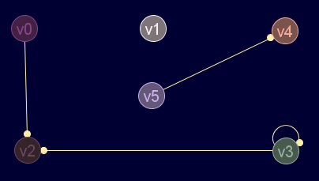

Descripción
Comprueba si nodo2 es adyacente a nodo1
Cadena de entrada
gr_adyacente
Cadena de salida
GRAFO.adyacente
Uso
gr_adyacente(<grafo>,<nodo1>,<nodo2>)
| Parámetros | |||
|---|---|---|---|
| # | Parámetro | Descripción | Valor por defecto |
| 1 | grafo | Diccionario de grafo válido | |
| 2 | nodo1 | Nodo inicial del arco dado por índice o por etiqueta | |
| 3 | nodo2 | Nodo final del arco dado por índice o por etiqueta. Si la función devuelve verdadero, este nodo será adyacente al nodo1 |
|
Ejemplos
gr_nuevo([[0,0,1,0,0,0],[0,0,0,0,0,0],[0,0,0,0,0,0],[0,0,2,1,0,0],[0,0,0,0,0,0],[0,0,0,0,1,0]],verdadero,falso,verdadero)
Grafo en JMEScriptGUI con visor de grafos v0.1:

gr_adyacente(gr_nuevo([[0,0,1,0,0,0],[0,0,0,0,0,0],[0,0,0,0,0,0],[0,0,2,1,0,0],[0,0,0,0,0,0],[0,0,0,0,1,0]],verdadero,falso,verdadero),5,4)
Booleano: verdadero
Pero no al contrario:gr_adyacente(gr_nuevo([[0,0,1,0,0,0],[0,0,0,0,0,0],[0,0,0,0,0,0],[0,0,2,1,0,0],[0,0,0,0,0,0],[0,0,0,0,1,0]],verdadero,falso,verdadero),4,'v5')
Booleano: falso
El nodo 3 es adyacente a sí mismo:gr_adyacente(gr_nuevo([[0,0,1,0,0,0],[0,0,0,0,0,0],[0,0,0,0,0,0],[0,0,2,1,0,0],[0,0,0,0,0,0],[0,0,0,0,1,0]],verdadero,falso,verdadero),'v3','v3')
Booleano: verdadero
Véase también…
Desde / Última modificación
v0.6.2.0